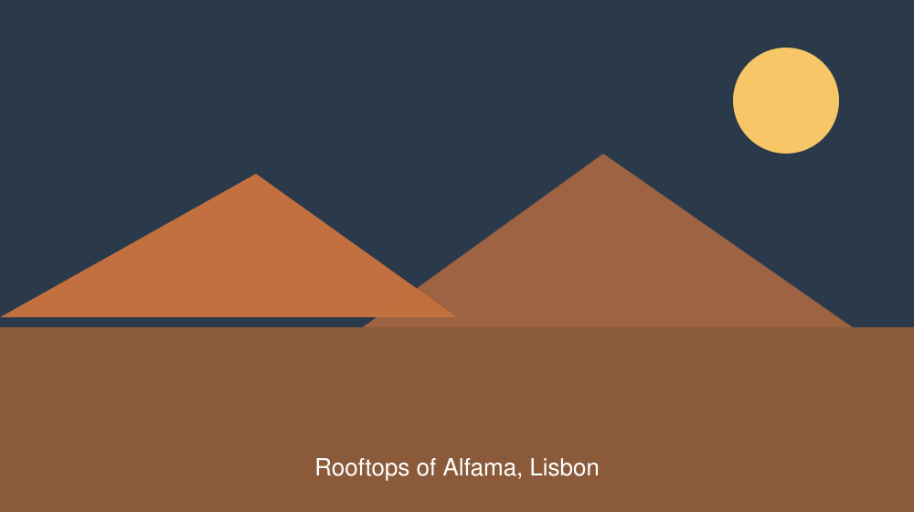
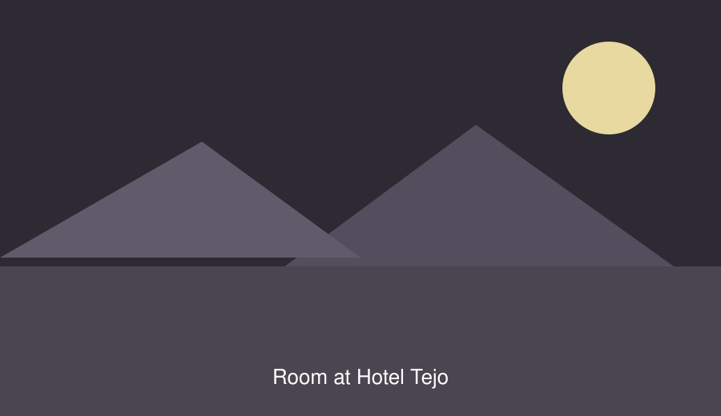
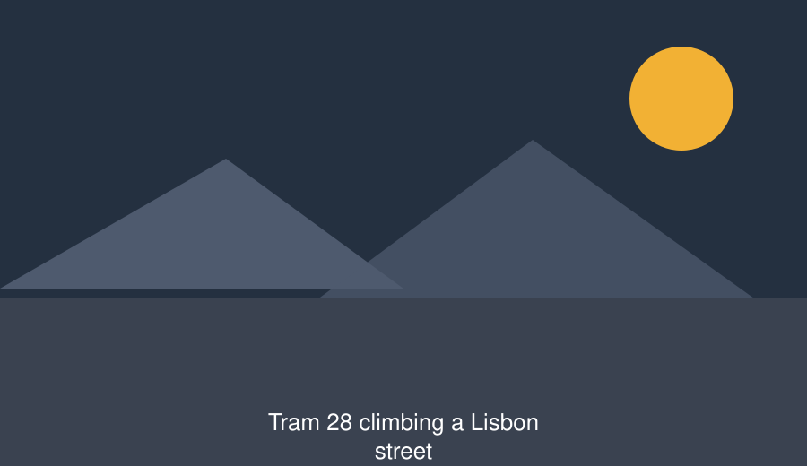

Day 1 — Arrival and Alfama
Transfer from the airport, then Rita's arrival walk at 17:00: the viewpoints, the two best bakeries, the launderette, and which of the hills you can avoid. Dinner is your own.
Walking: about 2 km, steep in places.
Tejo Travel
The old city on foot, the river by ferry, and a hotel on a street too narrow for coaches.
, available to . From €640 per person.
Alfama is the oldest quarter of Lisbon and the one that survived the 1755 earthquake: a hillside of lanes too steep and too narrow for a tour bus, which is exactly why we put our guests there. You will walk more than you expect and you will not need a taxi once.
The trip is deliberately unhurried. Two things are arranged for you — the castle tour on the first morning and the Sintra train on the last day — and the rest of the time is yours. Our guide Rita meets every group on arrival, walks the neighbourhood with you for an hour, and gives you her telephone number for the rest of the week.
Evenings tend to end in a tasca, a small family-run tavern, where somebody will eventually sing fado whether or not there was a performance scheduled.



Transfer from the airport, then Rita's arrival walk at 17:00: the viewpoints, the two best bakeries, the launderette, and which of the hills you can avoid. Dinner is your own.
Walking: about 2 km, steep in places.
Guided tour of São Jorge Castle at 11:00, then free time. Most guests walk down through the Sé cathedral and the Baixa. The fado museum is ten minutes from the hotel and worth an hour.
Walking: about 5 km, mostly downhill.
Tram 15E to Belém for the monastery and the pastéis de Belém, then the ferry across the Tejo to Cacilhas for the view back at the city. Optional fado evening at 21:00 if you booked it.
Walking: about 6 km, flat.
Early train to Sintra for Pena Palace and the gardens at Quinta da Regaleira. Back in Lisbon by 18:00, transfer to the airport the following morning at 06:30.
Walking: about 7 km, hilly, with a long climb to the palace.
All figures are per person in euros, based on two people sharing a standard twin room in May 2027.
| Item | Detail | Amount |
|---|---|---|
| Package base price | Flights, four nights with breakfast, transfers, guide, castle, Sintra train | 640.00 |
| Single room supplement | Only if you are travelling alone | 145.00 |
| City tourist tax | €2.00 per person per night, paid at the hotel | 8.00 |
| Fado evening | Optional, includes one drink | 38.00 |
| Travel insurance | Optional, covers cancellation and medical costs | 29.00 |
| Airport transfer, private car | Optional, instead of the shared minibus | 24.00 |
| Total, sharing a twin, no extras | Base price plus city tax | 648.00 |
| Total, single room, all extras | Everything in the table above | 884.00 |
| Prices held until . Flight prices in August are typically €90 higher and are confirmed when you book, never afterwards. | ||
Send us the dates and party, and we reply within one working day with the exact price and the flight times. Nothing is charged at this stage.
Nineteen rooms in a converted 1780s merchant's house, run by the same family since 1994. There is a lift to the second floor only; rooms on the third floor are reached by 22 stone steps.
Hotel TejoOpen a larger map of Alfama on OpenStreetMap (opens in a new tab)
Free cancellation up to 30 days before departure, minus the €40 booking fee. Between 30 and 14 days, 50% of the package price. Inside 14 days there is no refund, but you may transfer the booking to somebody else at no cost up to 48 hours before departure.
One hold bag of 20 kg and one cabin bag per traveller are included. The hotel street is cobbled and steep — a wheeled case will not enjoy the last 200 m, and we say so to every guest.
Children aged 6 to 15 travel at 80% of the adult price. Cots are free but must be requested in advance; there are three in the hotel. The castle tour lasts 90 minutes with no seating.
Call Rita first, on the number in your confirmation. The transfer waits up to two hours; after that we send a taxi and pay for it. If you lose a night, the hotel refunds it to us and we refund it to you within ten working days.
Alfama is a hillside of cobbles and stairs, and we will not pretend otherwise. The hotel has a lift to the second floor, one step-free room and an accessible bathroom. The castle has step-free access to the terrace but not to the towers. Call us and we will go through the route with you honestly before you book.